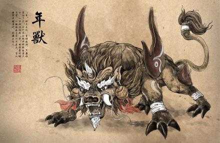

 在太古时期，有一种凶猛的怪兽；散居在深山密林中，人们管它们叫“年”。“年”的形貌恐怖，生性凶残，专食飞禽走兽、鳞介虫豸；一天换一种口味，从磕头虫一直吃到大活人，让人谈“年”色变。慢慢地，人们掌握了“年”的活动规律，原来它每隔365天（也就是平年一年，或366天闰年）窜到人群聚居的地方尝一次口鲜，而且出没的时间都是在天黑以后，等到鸡鸣破晓，它们便返回山林中去了。男男女女便把这可怕的一夜视为关煞，称作“年关”；并且想出了一整套“过年关”的办法：每到这一天晚上，家家户户提前做好晚饭，熄火净灶，再把鸡圈牛栏全部拴牢；然后把宅院的大门封住，躲“年夜饭”——由于这顿晚餐具有凶吉未卜的意思；所以置办得很丰盛，除了要全家老小围在一起用餐表示和睦团圆外，还须在吃饭前先供祭祖先；祈求祖先的神灵保佑他们平平安安地度过这一夜。吃过晚饭后，谁都不敢睡觉，挤坐在一起闲聊壮胆。天色渐渐黑了下来，“年”从深山老林里窜了出来，摸进人群聚居的村落。只见家家户户宅门紧闭，门前还堆着芝麻杆，街上却瞧不见一个人影儿。转了大半个晚上的“年”毫无所获，只好啃些芝麻杆充饥。再过些时，公鸡啼晓，这些凶残而又愚蠢的怪物只得怏怏返回。熬过“年关”的人们欣喜不已，要感谢天地祖宗，要互相祝贺没有被“年”吃掉，还要打开大门燃放鞭炮，去同邻里亲友见面道喜。
这样过了好多年，没出什么事情，人们对年兽放松了警惕。就在有一年三十晚上，年兽突然窜到江南的一个村子里。一村子人几乎被年兽吃光了，只有一家挂红布帘、穿红衣的新婚小两口平安无事。还有几个童稚，在院里点了一堆竹子在玩耍，火光通红，竹子燃烧后啪啪地爆响；年兽转到此处，看见火光吓得掉头逃窜。此后，人们知道年兽怕红、怕光、怕响声，每至年末岁首；家家户户就贴红纸、穿红袍、挂红灯、敲锣打鼓、燃放爆竹，这样年兽就不敢再来了。在《诗经·小雅·庭燎》篇中，就有“庭燎之光”的记载。所谓“庭燎”就是用竹竿之类制作的火炬。竹竿燃烧后，竹节里的空气膨胀，竹腔爆裂，发出噼噼啪啪的响声，这也即是“爆竹”的由来。
可是有的地方，村民不知年兽怕红，常常被年兽吃掉。这事后来传到天上的紫微星君那儿，他为了拯救人们，决心消灭年兽。有一年，他待年兽出来时，就用火球将它击倒，再用粗铁链将它锁在石柱上。从此，“年”就被人们降服，成了镇宅保平安的益兽。每到过年，人们总要烧香，感谢紫微星君下界带来的平安。
新春快乐